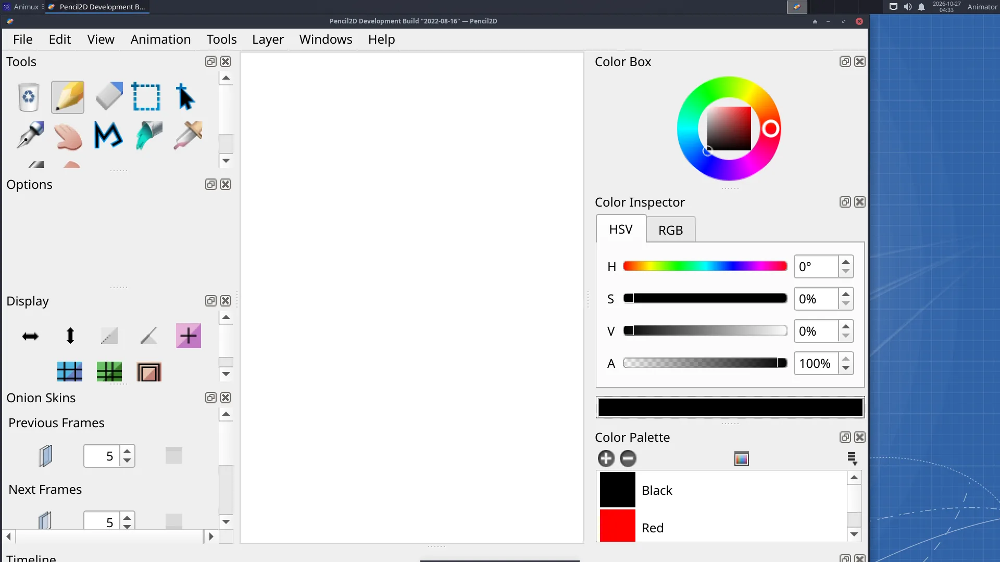
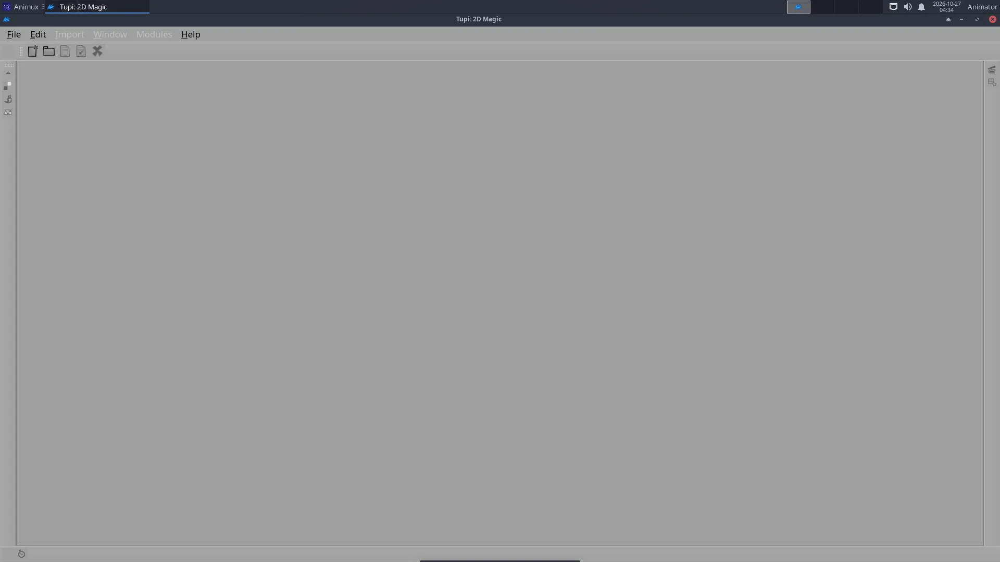

| Pencil2D | |
|---|---|
| Menu | 2D Animation → Pencil2D |
| Version | 0.6.6 |
| Command | pencil2d |
| Good for | Beginner |
| Files | .pclx; exports PNG sequence, GIF, MP4 |
| Licence | GPL-2.0 |
| Website | pencil2d.org |
Pencil2D works like a flip book: you draw a picture on each frame and play them in a row. Onion skin shows the previous and next drawings faintly, so you can draw the in-betweens. It is simple enough for children and good enough for professional rough animation.


Layer types#
| Layer | For |
|---|---|
| Bitmap | pencil and brush drawing, like paper |
| Vector | clean lines you can still edit; fill areas with the bucket |
| Camera | pan and zoom over the drawing |
| Sound | dialogue or music to time your animation |
A first animation#
See the full tutorial: Hand-drawn animation in Pencil2D. In short:
- Draw on frame 1.
- Click frame 3 in the timeline and click + (Add Frame); draw the next pose.
- Switch on onion skin (the onion buttons above the timeline) to see the frame before.
- Press Play. Change the speed with the FPS box (12 fps is common for hand-drawn animation, "on twos" at 24 fps).
- File → Export → Movie for MP4 or GIF, or Image Sequence for PNG files.
Pencil2D saves projects as .pclx.
TupiTube#
TupiTube (Debian package tupi) is another beginner-friendly 2D animation program, made for schools: draw, tween objects between positions, and export. Start it from 2D Animation → TupiTube or tupi.

